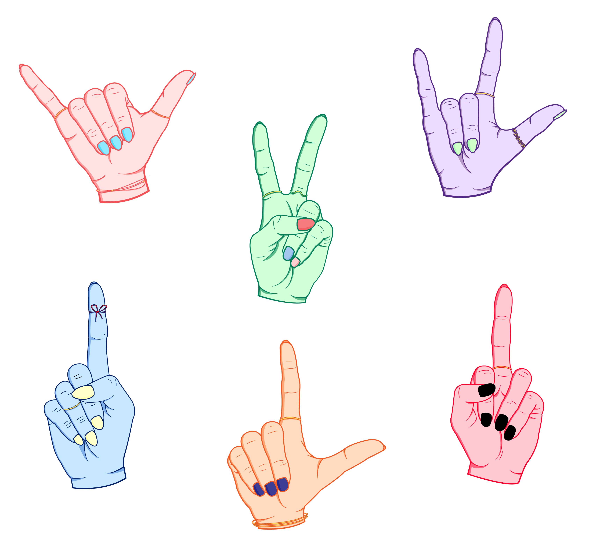

I made this poster as a sophomore in college, for Art 346. The prompt was to create a poster persuading people to vote.
Moon Music, 2020, Digital
I created this pattern as a sophomore in college for Art 102. The prompt was to create a pattern of repeating motifs.

Hand Stickers, 2020, Digital
These hand stickers were created when I was a sophomore for Art 102. The prompt was to create a set of six stickers. These stickers are available for purchase at the following website: https://rdbl.co/2z5BKYk